TEMA 03
Estructura de un documento HTML
Material de estudio organizado a partir del PDF correspondiente. Se conserva el contenido textual del documento y se distribuye por páginas para facilitar su consulta.
Página 1
Estructura de un documento HTML
Página 2
1. Introducción y contextualización práctica
2. Estructura de un documento HTML
4
3. Tipo de documento (DTD)
5
4. Cabecera
5
4.1. Charset (Juego de caracteres)
6
5. Cuerpo Bloques de contenido. Parráfo
8
6. Cuerpo. Bloques de contenido. Separador y división
9
7. Cuerpo. Bloques de contenido. Divisiones anidadas
10
8. Cuerpo. Bloques de contenido. Cita larga
11
9. Cuerpo. Bloques de contenido. Formateo
12
10. Secciones
12
11. Caso práctico 1: “Información de la empresa”
13
12. Caso práctico 2: “Mejora plantilla trabajadores”
15
13. Resumen y resolución del caso práctico de la unidad
16
14. Webgrafía
17 cualquier medio o procedimiento, incluidos la reprografía y el tratamiento informático.
Página 3
1. Introducción y contextualización práctica
El documento HTML y su estructura nos permiten dotar de contenido a nuestra página web. Para que los navegadores sepan interpretar correctamente esa información, debemos seguir unos estándares y prototipos que nos aseguren su correcta visualización. A lo largo de los últimos años, han surgido variaciones de las versiones de HTML, para aportar mayor funcionalidad y flexibilidad con respecto a las primeras versiones que aparecieron. WebMalagaDesign ha recibido el encargo de realizar una página web para una agencia de viajes. El primer módulo que deben realizar será una página donde se muestren los datos principales de la empresa. Escucha el siguiente audio donde planteamos la contextualización práctica de este tema. Encontrarás su resolución en el apartado «Resumen y resolución del caso práctico de la unidad». Conocer la estructura de un documento HTML. Diferenciar los tipos de documentos existentes. Trabajar con las etiquetas de la cabecera y las primeras etiquetas del cuerpo del documento HTML. de viajes” https://bit.ly/2zecccd
Página 4
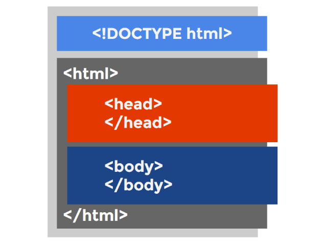
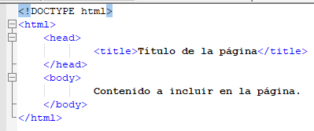
2. Estructura de un documento HTML
Un documento HTML tiene tres partes claramente diferenciadas:
• Una primera línea que contiene información sobre la versión de HTML que estamos usando (no siempre
aparece).
• Una cabecera con información sobre la página web que estamos creando.
• Un cuerpo que abarca la información del documento.
Como indicamos en el tema anterior, definiremos el contenido a través de marcas que indicarán formato, partes del documento, referencias, etc. Todo documento tiene que ir acotado entre las etiquetas <html></html>; esta será la primera etiqueta que encontraremos tras indicar la versión de HTML. Representará la raíz de nuestra estructura. Después, nos encontraremos con la etiqueta <head></head>, que contendrá información del documento, como el título o ciertas palabras clave, que permitirán que los motores de búsqueda encuentren la página. Dentro de la cabecera, tendremos la etiqueta <title></title> donde indicamos el título de la página. Es importante que elijamos uno adecuado, relacionado con el contenido de la web. Por último, tendríamos la etiqueta <body></ body> donde iremos incluyendo otras etiquetas para crear el contenido. Por lo tanto, la estructura básica de una
página web sería:
Video 1. “Estructura sitio web” https://bit.ly/2UmSaU4
Página 5
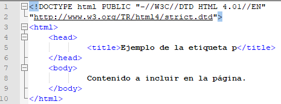
3. Tipo de documento (DTD)
Como ya hemos visto, un documento HTML está estructurado en 3 partes claramente diferenciadas, cada una de las cuales contendrá diferentes etiquetas. Estas etiquetas las vamos a definir en los siguientes puntos. La etiqueta <!DOCTYPE ….> nos indica el tipo de documento con el que trabajaremos. Según el tipo de documento que sea, se aplicarán una serie de reglas mediante las que podremos saber si el documento creado es válido o no.
Los tipos de documentos posibles para la versión de HTML 4.01 son los siguientes:
• Estricto: permite usar etiquetas HTML 4.01, pero no va a admitir etiquetas obsoletas.
<!DOCTYPE html PUBLIC “-//W3C//DTD HTML 4.01//EN” “http://www.w3.org/TR/html4/strict.dtd”>
• Transicional: en este se pueden usar etiquetas de cualquier versión de HTML.
<!DOCTYPE html PUBLIC “-//W3C//DTD HTML 4.01//EN” “http://www.w3.org/TR/html4/loose.dtd”>
• Frameset: tendría soporte para frames (marcos que se crean en las páginas web). Actualmente lo podemos
considerar desfasado, pues los frames se usan cada vez menos. <!DOCTYPE html PUBLIC “-//W3C//DTD HTML 4.01//EN” “http://www.w3.org/TR/html4/frameset.dtd”> En caso de que trabajemos con la versión de HTML5, la manera de indicarlo se simplifica, porque simplemente tendríamos que poner la etiqueta <!DOCTYPE html>. Si no se indica el tipo de documento, el navegador pasa a un modo no estándar y se activa el modo de compatibilidad con páginas antiguas. Esto puede ser peligroso porque algunas etiquetas se pueden interpretar de forma diferente . Si
queremos que nuestro código use etiquetas HTML 4.01, y que no admita obsoletas, necesitaríamos el siguiente código:
4. Cabecera
Dentro de las etiquetas de <head></head> vamos a incluir elementos de la cabecera. Algunas de esas etiquetas son:
• <title>: se indica el título de la página y aparecerá en las pestañas de los navegadores.
• <meta>: define metadatos que no se pueden crear con otras etiquetas de HTML. Ejemplos de metadatos
pueden ser:
» <meta charset=”UTF-8”>: indica el conjunto de caracteres usado. En este caso se usa UTF-8.” » <meta name=”description” content=”Contenido”>: se puede indicar qué tipo de información va a contener la página web.
Página 6
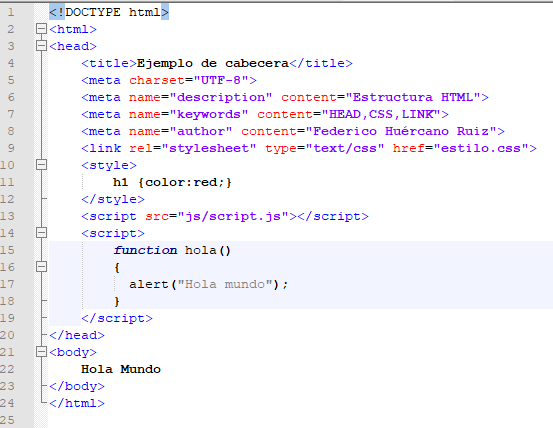
» <meta name=”keywords” content=”palabras clave”>: permite indicar palabras clave para los motores de búsqueda. » <meta name=”author” content=”nombre del autor”>: se indica el autor de la web.
• <link>: se utiliza para enlazar CSS externo.
• <style>: aquí escribiríamos el CSS y no en un fichero externo.
• <script>: se indica un script en línea o la referencia a un fichero externo con el script, normalmente JavaScript.
Ejemplo de cabecera Para el caso del script y del CSS, siempre es una buena práctica indicarlos en ficheros externos, por lo que es más aconsejable utilizar <link rel> para indicar el CSS externo, y <script src> para el fichero que contiene el script utilizado. Tanto CSS como JavaScript los veremos en temas posteriores en los cuales detallaremos su uso y sintaxis.
4.1. Charset (Juego de caracteres)
Para que un documento HTML se muestre de manera correcta en el navegador, debemos indicarle el conjunto de caracteres a utilizar para que no haya errores de interpretación. Como hemos visto, esto se indica con la etiqueta <meta charset = “UTF-8”>. Pero, ¿en qué consiste exactamente la codificación de caracteres? Un ordenador solo entiende el 0 (sin paso de corriente) y 1 (con paso de corriente). Pues bien, para representar los caracteres con los que vamos a trabajar en el documento HTML, debemos relacionar esos ceros y unos con el juego de caracteres que se necesiten. ASCII (American Standard Code for Information Interchange) fue el primer estándar para codificar los caracteres.
Definió 128 caracteres alfanuméricos, aunque actualmente admite más. Algunos de esos caracteres son:
Página 7
º Puedes visualizar una tabla completa aquí. Por ejemplo, al carácter $ la codificación binaria que le corresponde sería 00100100, que también se puede indicar en notación decimal (36), octal (044) o hexadecimal (24). Otros juegos
de caracteres son:
• ISO-8859-1: era el juego de caracteres usado para HTML4. Admite 256 caracteres diferentes.
• ANSI: fue el juego original de Windows. Es igual que ISO-8859-1, pero tiene 32 caracteres más.
• UTF-8: salva las limitaciones de los dos juegos anteriores, pues UTF-8 cubre casi todos los caracteres y
símbolos del mundo. Para HTML5 este es el conjunto de caracteres predeterminado. Puedes encontrar un listado completo aquí. Cuando tenemos que incluir algunos símbolos que no tengamos en el teclado a una página HTML, podemos usar el número HTML correspondiente a ese carácter. Por ejemplo, en la tabla adjunta vemos que el símbolo ‘!’ tiene el HTML number !. Si queremos que ese símbolo aparezca en el documento tendría que poner el siguiente código
HTML:
Tabla 1. Código ASCII. Video 2.”Uso del número HTML” https://bit.ly/3aI4O7d <p>Voy a mostrar el signo de admiración !</p> DEC OCT HEX BIN Symbol HTML Number 32 040 20 00100000   33 041 21 00100001 ! ! 34 042 22 00100010 “ " 35 043 23 00100011 # # 36 044 24 00100100 $ $ 37 045 25 00100101 % % 38 046 26 00100110 & & 39 047 27 00100111 · ' 40 050 28 00101000 ( ( 41 051 29 00101001 ) )
Página 8
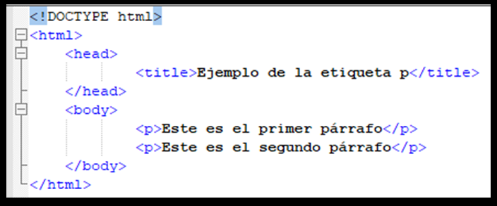
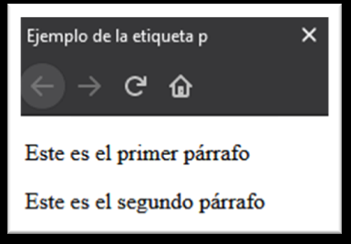
5. Cuerpo Bloques de contenido. Parráfo
Dentro de las etiquetas <body></body> vamos a incluir elementos del cuerpo. En esta sección tendremos el mayor número de etiquetas, ya que aquí se define el contenido total de nuestra página web.
Podemos clasificar los tipos de etiquetas en los siguientes grupos:
• Bloques de contenido
• Secciones
• Texto
• Enlaces
• Listas
• Contenido incrustado
• Tablas
• Formularios
• Elementos interactivos
Vamos a comenzar estudiando las etiquetas pertenecientes a los bloques de contenido. Las etiquetas de este grupo nos van a permitir crear bloques de elementos que vamos a poder distribuir a lo largo de
la página web. Distinguimos las siguientes:
• Párrafo
» Etiqueta: <p> » Función: esta etiqueta nos va a permitir crear párrafos de texto o imágenes.
Página 9
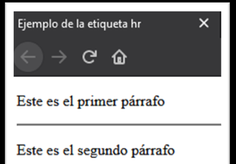
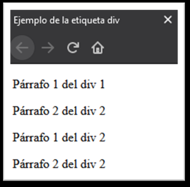
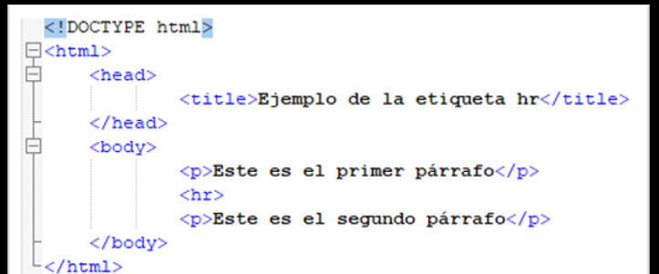
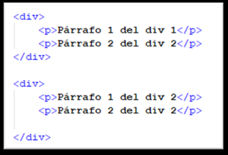
6. Cuerpo. Bloques de contenido. Separador y división
• Separador
» Etiqueta: <hr> » Función: nos permite separar elementos con una línea horizontal. No es necesario etiqueta de cierre.
• División
» Etiqueta: <div> » Función: Esta etiqueta nos va a permitir agrupar otros elementos HTML (párrafos, tablas, otras divisiones, etc.) para crear una agrupación mayor. A las divisiones también se les suele llamar capas.
Página 10
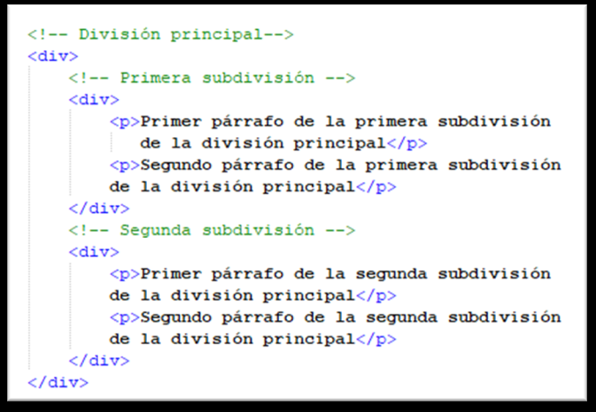
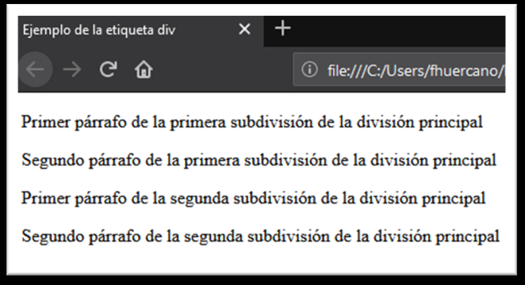
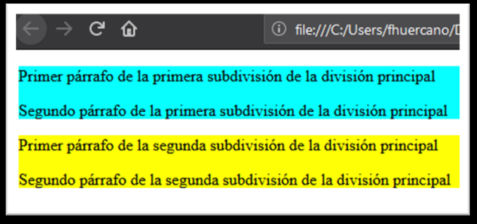
7. Cuerpo. Bloques de contenido. Divisiones anidadas
• Divisiones anidadas
Como hemos comentado, las divisiones se pueden anidar, lo cual nos permitirá estructurar el contenido de nuestra
página web en bloques mayores. Veamos un ejemplo:
Es muy útil usar divisiones, pero no hay que abusar de ello. Es una buena práctica usarlas solo cuando hay que agrupar más de un elemento. En cambio, una división será innecesaria si sólo va a contener un párrafo. Veamos la
vista producida en navegador:
El resultado que obtenemos en el navegador es el mismo que si no hubiéramos usado divisiones, o sea, solo con etiquetas <p>. Sin embargo, ya veremos en próximos apartados que al haber hecho divisiones puedo aplicar diferentes colores con CSS a los DIV.
Página 11
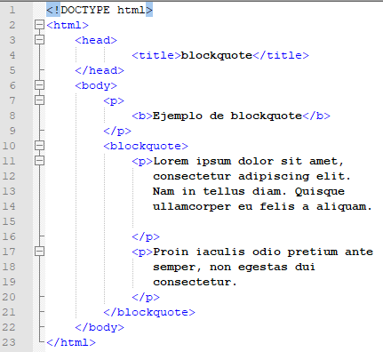
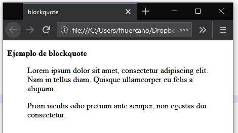
8. Cuerpo. Bloques de contenido. Cita larga
• Cita larga
» Etiqueta: <blockquote> » Función: permite incluir un texto «largo» que, a su vez, puede contener varios párrafos o, incluso, otras etiquetas. Como regla general, los navegadores suelen mostrar este bloque con un margen a izquierda y derecha. Veamos un ejemplo
En el navegador obtendríamos la siguiente vista:
Como se puede observar, sin haber indicado ningún estilo aparecen márgenes tanto en la parte derecha como en la izquierda. En este caso se han incluido párrafos, pero podría haber contenido imágenes, divisiones, separadores, etc. Audio 1. “Lorep ipsum”. https://bit.ly/2YboHxD
Página 12
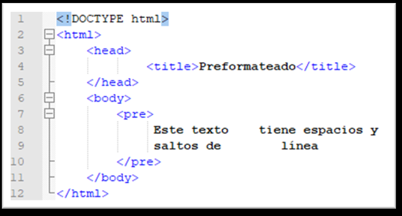
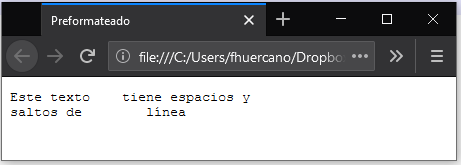
9. Cuerpo. Bloques de contenido. Formateo
• Formateo
» Etiqueta: <pre> » Función: esta etiqueta se utiliza cuando se quiere mantener los espacios, tabuladores y diseño del texto original.
10. Secciones
Las secciones nos permiten fraccionar el contenido en partes que comparten un tema común. En HTML4 / XHTML 1 la única etiqueta para hacer agrupaciones y darle un significado común es <div>. En HTML5 se han incluido nuevas etiquetas que resuelven este problema. En el tema que dediquemos específicamente a las mejoras de HTML5 se incluirán estas etiquetas. Ahora solo se van a referenciar los títulos como elemento de sección.
• Títulos
» Etiquetas: <h1><h2><h3><h4><h5><h6> » Función: Las etiquetas <h1><h2><h3><h4><h5><h6> se utilizan para identificar títulos y subtítulos en nuestro contenido. Vídeo 3. “Uso de la etiqueta <pre>” https://bit.ly/3l3pLhN
Página 13
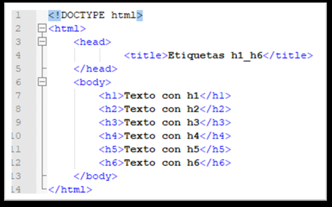
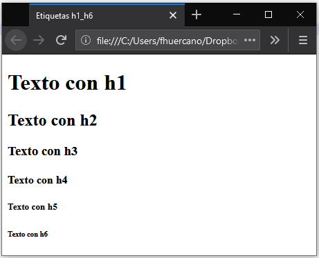
Si al documento HTML no se le indica alguna hoja de estilo, el navegador trabaja con la hoja estilo por defecto. En esta, las etiquetas de título se muestran en tamaño inverso al número indicado en su etiqueta. Es decir, que a menor número mayor tamaño. Por lo tanto, <h1> será la etiqueta que mostrará el título más grande y <h6> el más pequeño. Las etiquetas <h1> deben usarse de manera jerárquica, es decir, no podemos saltarnos niveles. De esta manera, no
debemos anteponer un <h2> a un <h1>, por ejemplo. El uso más frecuente de un nivel u otro es el siguiente:
• <h1> suele usarse para un apartado principal.
• <h2> para un apartado dentro del apartado principal.
• <h3> un subapartado incluido en el anterior, y así sucesivamente.
11. Caso práctico 1: “Información de la empresa”
Planteamiento: Alberto le comenta a Gloria que necesita un contenido en HTML donde se muestre información acerca de ella.
Página 14
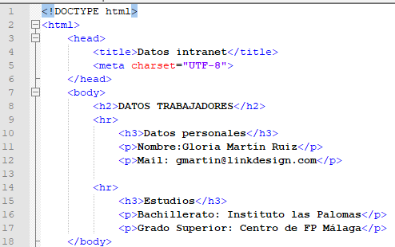
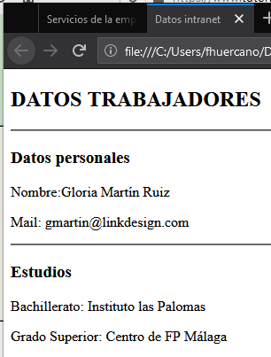
Nudo: para tener información de todos los empleados de la empresa en la intranet, Alberto necesita ciertos datos en formato HTML. Por este motivo, le pide a Gloria que lo haga con sus datos y le pase la plantilla. Los datos que debe
incluir son:
• Nombre y apellidos
• Estudios
Para ello, utiliza las etiquetas vistas en el tema. Desenlace: se puede plantear una estructura HTML como la que veremos en el siguiente ejemplo. En la figura 23, puedes observar el desarrollo del código que se podría generar y en la 24, la vista que produciría en navegador.
Página 15
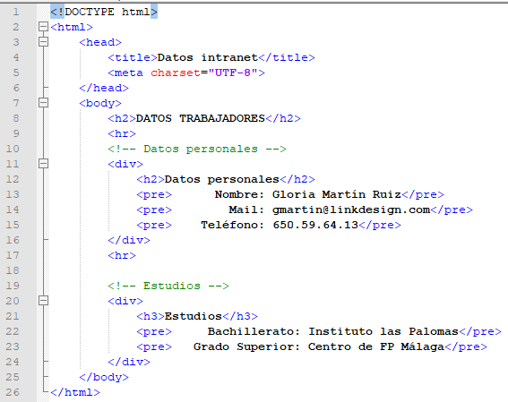
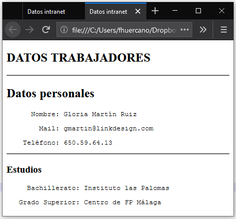
12. Caso práctico 2: “Mejora plantilla trabajadores”
Planteamiento: Alberto ve la plantilla que ha hecho Gloria y le comenta algunas cuestiones para que las revise y la vuelva a hacer. Nudo: Gloria, debes incluir comentarios en el código y también quiero algo de formato mediante la etiqueta <pre> para que los datos personales y los estudios tengan un cierto sangrado. Utiliza también div, porque más adelante vamos a cambiar el color de cada apartado. Por último, incluye el teléfono en los datos personales.
Desenlace:
Podemos observar una posible solución a los cambios que pide Alberto en la figura 23, y cómo se comporta el navegador ante ellos en la figura 24.
Página 16
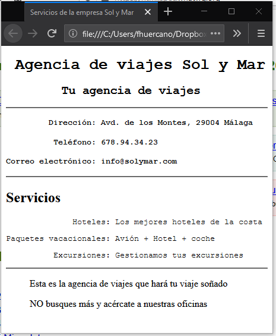
13. Resumen y resolución del caso práctico de la
unidad
Como hemos estudiado en el tema, un documento HTML se estructura en tres partes claramente diferenciadas:
el tipo de documento, la cabecera y el cuerpo. El tipo de documento nos indicará la versión de HTML con la que trabajamos, en la cabecera damos información relativa al contenido y en el cuerpo incluimos las etiquetas necesarias para dotar de contenido a la página web. También hemos visto la importancia de elegir un correcto juego de caracteres para que no haya problemas en la visualización de ciertos símbolos poco frecuentes. Finalmente, se ha comprobado que la inclusión de etiquetas en el cuerpo nos permitirá añadirle riqueza y funcionalidad a la página web. Resolución del Caso práctico de la unidad Te proponemos a continuación la resolución del caso práctico planteado al inicio del tema, en donde se planteaba crear una página web que mostrara información sobre una agencia de viajes. Aquí puedes ver la vista que tendríamos en el navegador, y en el anexo adjunto, el código para generarlo. Cabecera Juego de caracteres Cuerpo Tipo de documento Estructura documento hTML
Página 17
14. Webgrafía
Escuela de HTML: W3schools. Tecnología web para desarrolladores: Mdn. World Wide Web Consortium (W3C). W3C. Referencia y novedades HTML. Html Living Standard